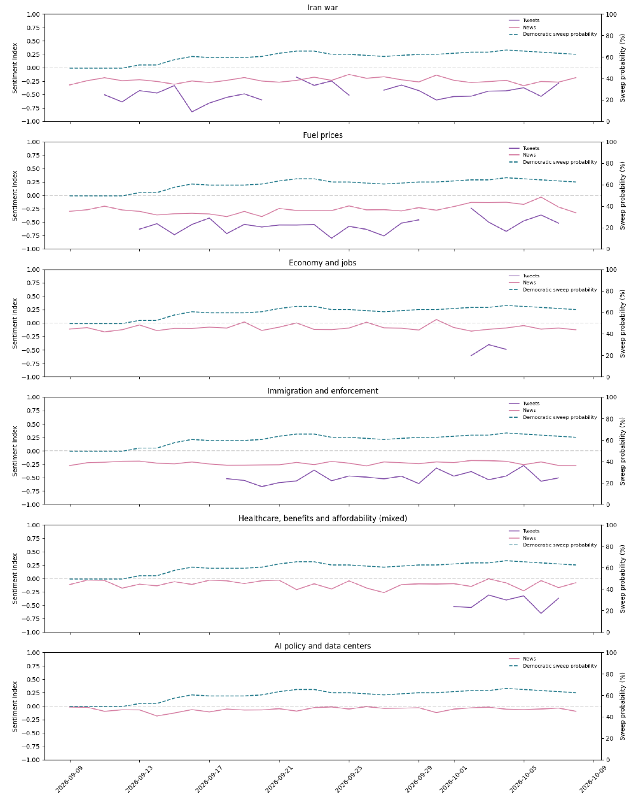

The research question
What policy themes emerged during pre-midterm election discussion, and did their sentiment reliably track prediction-market or equity movements?
I compared unsupervised topic models, built daily topic-specific sentiment indices, and studied relationships with Polymarket Democratic-sweep probabilities and an equity basket selected for policy exposure.
Collecting election discourse
English-language X posts were retrieved through Apify using daily search windows and election-related terms. GDELT BigQuery supplied news headlines from September 9 through October 8, 2026, with up to 100 headlines sampled per UTC day.
After deduplication and screening, 16,536 tweets remained for topic model refitting. Topic discovery uses general election searches rather than predefined policy categories, allowing issues to emerge from the text.
Comparing topic models
BERTopic, non-negative matrix factorization (NMF) and latent Dirichlet allocation (LDA) were evaluated on their ability to separate interpretable policy discussions.
| Method | Tweet topics | News topics | Tweet unassigned | News unassigned |
|---|---|---|---|---|
| BERTopic | 73 | 44 | 25.55% | 20.91% |
| NMF | 10 | 10 | 0.01% | 0.10% |
| LDA | 10 | 10 | 0.01% | 0.10% |
BERTopic identified distinct clusters around Iran, fuel prices, immigration, healthcare, economic conditions and AI infrastructure. NMF and LDA primarily organized discourse around broad voting and campaign themes. Different topic counts affect granularity, so this comparison supports suitability for the sample, not universal superiority.
Measuring issue-specific sentiment
Using a RoBERTa-based sentiment classifier, each document received positive, neutral and negative probabilities. A daily sentiment index was constructed for each issue and source when at least five scored documents were available.
A supplementary, issue-specific news collection covered six policy areas. The resulting news and tweet indices measure emotional tone rather than partisan support or the relative popularity of issues.


Testing the connection to markets
Prediction markets
Between September 9 and October 8, implied Democratic-sweep probability increased from approximately 49.5% to 62.5%. The strongest exploratory relationship was previous-day AI news sentiment and subsequent probability changes (r = −0.542, Holm-adjusted p = 0.064). No relationship survived multiple-testing correction at 5%.
Policy-sensitive equities
The equal-weight basket contains HCA Healthcare, GEO Group, First Solar, NVIDIA, ExxonMobil and Lockheed Martin. Market-adjusted returns are measured against SPY.
Several correlations were nominally significant, but none survived Holm correction. Other company and sector developments prevent attribution of the basket's returns to election expectations.
Conclusions
Topic discovery provided interpretable policy themes, but the sentiment indices did not demonstrate robust predictive power over the short evaluation window.
Coverage was uneven, observations were limited and potential serial dependence complicates inference. The collected texts do not establish representative voter sentiment, and emotional tone cannot be interpreted as political preference.